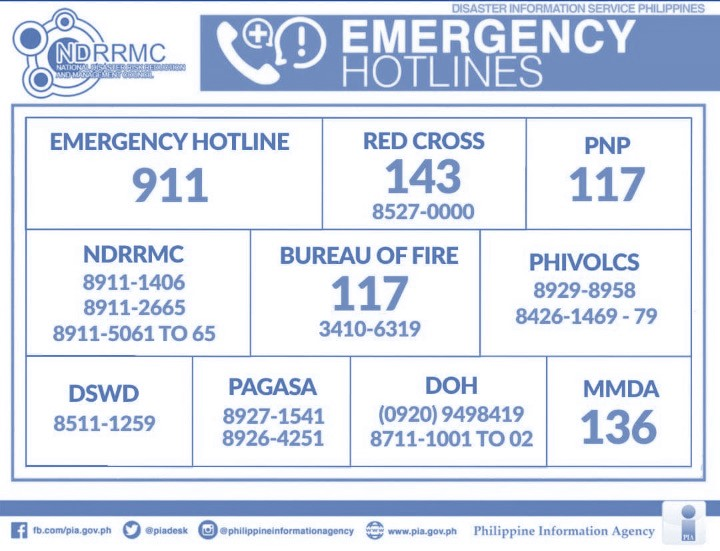

How to Prevent Fires |
Proper Storage of Gas Tanks1 |
There are many households that use gas instead of electricity, especially when it comes to cooking food, which means we have to take this into account. Always check for gas leaks, and make sure to store in a well-ventilated area, so that, just in case there is a gas leak, gas accumulation will be avoided, and will lessen the chances of an explosive gas fire. |
Dispose of Cigarette Buds Properly2 |
Especially if you live in an area with a lot of foliage, like a garden, always make sure to dispose of cigarette buds properly, because if they are not put out, and are thrown into an area with highy flammable objects like dry leaves, it can cause fire. Aside from that, it will also pollute the environment. |
Keep Flammable Objects Out Of Reach Of Children3 |
Children, and by extension pets, often are not aware of the danger that certain household items like lit candles, match sticks, and lighters pose, which is why we should keep these out of their reach, for everyone's safety. |
Make An Emergency Escape Plan4 |
This is not limited to larger scaled buildings, but it is also good to think ahead just to be sure you and your family know what to do in case of fire. Make sure to make an emergency plan that contains all possible escape routes and a meeting spot to re-group with family after initial escape. |
How to Mitigate Fires |
Close The Door5 |
If you see that a fire has started in another room, but don't have any fire extinguishers nearby, immediately close the door, which provides a buffer before the fire spreads to the next room, giving more time to call for help and evacuate. |
Extinguish The Fire Appropriately6 |
If you have the capability to extinguish a fire, then immediately do so. IMPORTANT NOTE Make sure to take note of the following, and, if unsure, do not attempt extinguishing it.
|
Cover Face With Cloth7 |
It makes sure that smoke and debris would not enter your respiratory tract, suffocating you. It also prevents flames from burning your face. |
"Stop, Drop, And Roll"8 |
If ever your clothes catch on fire, do not panic. Instead, follow the "Stop, Drop, and Roll" rule. By doing this, the fire will be extinguished because you will be cutting off its fuel source, Oxygen, by dropping and rolling. |
|  Call Emergency Hotline9 |
Once not in any immediate danger, immediately call emergency services to make sure the fire will not spread and become a larger problem. |